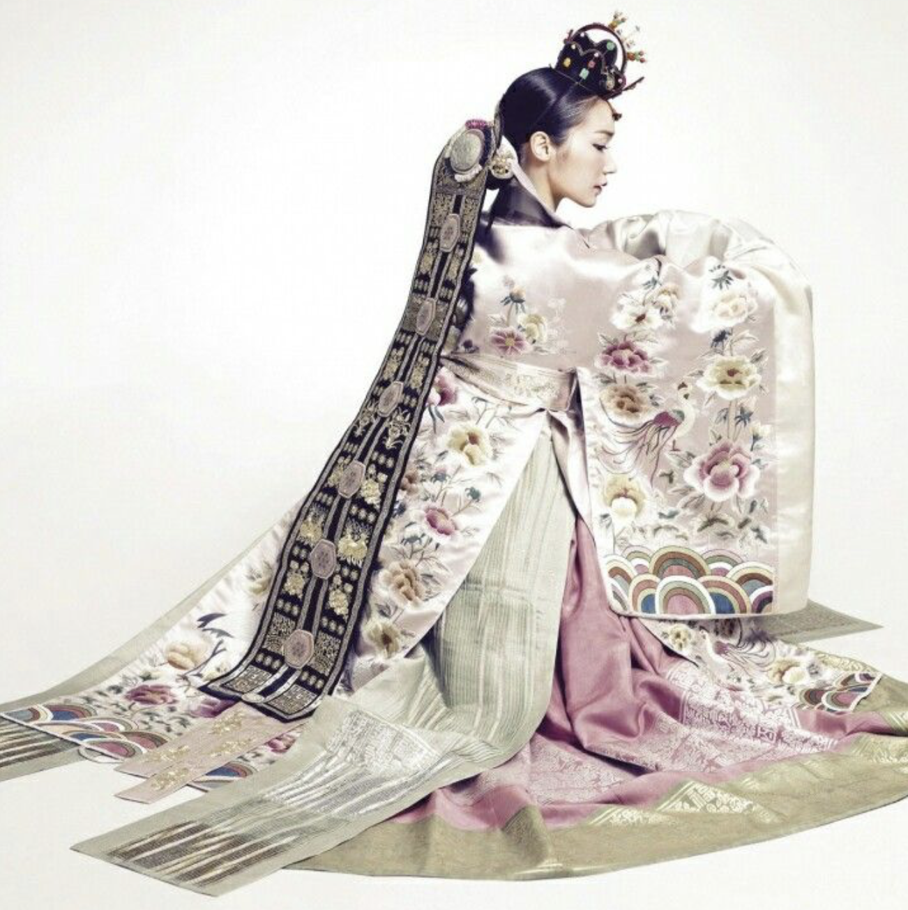
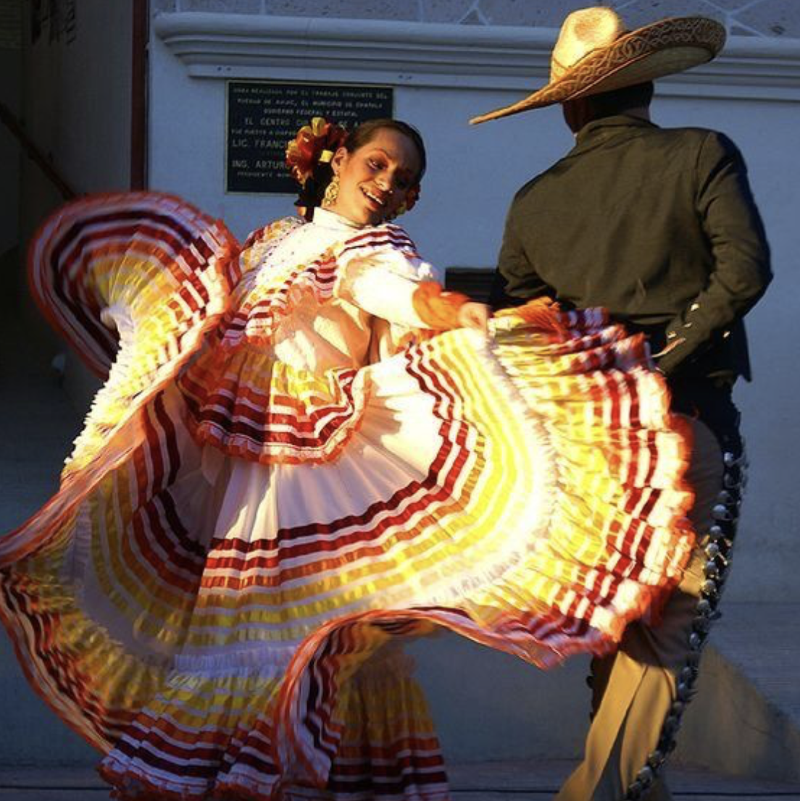
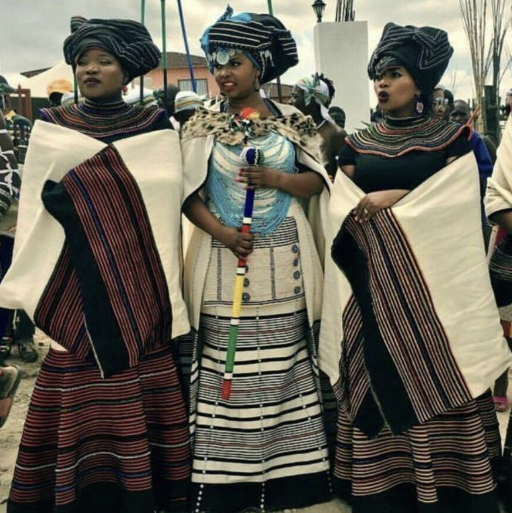
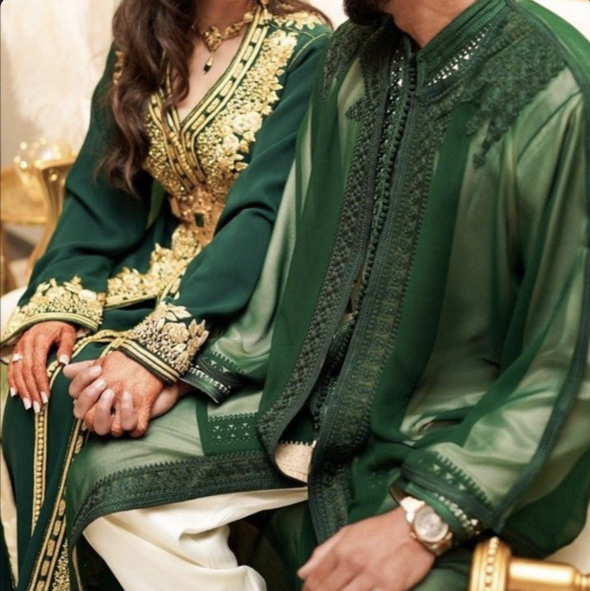

aflevering 1, Stijl: Wat verschilt, wat verbind
In deze aflevering word besproken hoe mode verbind, maar ook hoe het unieke culturele identiteit brengt.
In deze aflevering word besproken hoe mode verbind, maar ook hoe het unieke culturele identiteit brengt.
In deze aflevering gaan we dieper in op, Stijl: Wat verschilt, wat verbind. Wij doen dit aan de hand van de landen: Noord- en Zuid-Korea, deze landen delen een geschiedenis, maar hun mode weerspiegelt hun uiteenlopende politieke en sociale contexten.
In deze aflevering word besproken hoe culturele apropriatie invloed heeft op de bevolking van een land.
In deze aflevering gaan we dieper in op, Kleding met een verhaal: Wie mag het vertellen. Wij doen dit aan de hand van het land Mexico.
In deze aflevering word bepsroken hoe slavernij invloed heeft gehad op de culturele kledij.
In deze aflevering gaan we dieper in op, Van onderdrukking tot identiteit: De mode-erfenis van slavernij. Wij doen dit aan de hand van het land Zuid-Afrika.
In deze aflevering word besproken hoe religie traditionele kledij beïnvloed.
In deze aflevering gaan we dieper in op, Heillige draad: De rol van religie in tradtionele kledij. Wij doen dit aan de hand van het land Marokko.
In deze aflevering word besproken hoe de traditie van een land invloed heeft op traditionele kledij van mannen en vrouwen.